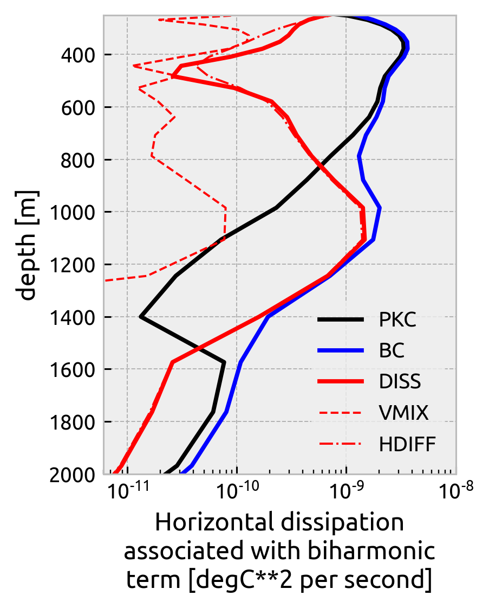

Yiming’s POP variance budget
Yiming’s POP variance budget#
Reproducing the variance budget for POP
%load_ext watermark
%matplotlib inline
import glob
import cf_xarray as cfxr
import dcpy
import distributed
import matplotlib as mpl
import matplotlib.pyplot as plt
import numpy as np
import tqdm
from IPython.display import Image
import eddydiff as ed
import xarray as xr
xr.set_options(keep_attrs=True)
plt.rcParams["figure.dpi"] = 140
plt.rcParams["savefig.dpi"] = 200
plt.style.use("bmh")
%watermark -iv
dcpy : 0.1
cf_xarray : 0.5.3.dev29+g3660810.d20210729
distributed: 2021.10.0
eddydiff : 0.1
xarray : 0.17.1.dev3+g48378c4b1
tqdm : 4.62.3
numpy : 1.21.3
matplotlib : 3.4.3
Image("../yiming-budget.png")

pop = xr.open_dataset("../datasets/pop-variance-budget.zarr", engine="zarr")
pop["depth"] = pop.depth * 100
pop
<xarray.Dataset>
Dimensions: (depth: 62, lat: 2400, lon: 3600)
Coordinates:
TLAT (lat, lon) float64 ...
TLONG (lat, lon) float64 ...
* depth (depth) float64 5.0 15.0 25.0 ... 5.375e+03 5.625e+03 5.875e+03
Dimensions without coordinates: lat, lon
Data variables:
BC (depth, lat, lon) float64 ...
HDIFF (depth, lat, lon) float64 ...
PKC (depth, lat, lon) float64 ...
VMIX (depth, lat, lon) float64 ...pop_natre = pop.isel(lat=slice(1420, 1472), lon=slice(790, 840))
pop_natre_mean = pop_natre.mean(["lat", "lon"])
pop_natre
<xarray.Dataset>
Dimensions: (depth: 62, lat: 52, lon: 50)
Coordinates:
TLAT (lat, lon) float64 23.19 23.19 23.19 23.19 ... 27.8 27.8 27.8 27.8
TLONG (lat, lon) float64 329.1 329.1 329.2 329.4 ... 333.8 333.9 333.9
* depth (depth) float64 5.0 15.0 25.0 ... 5.375e+03 5.625e+03 5.875e+03
Dimensions without coordinates: lat, lon
Data variables:
BC (depth, lat, lon) float64 3.882e-09 3.784e-09 3.951e-09 ... nan nan
HDIFF (depth, lat, lon) float64 -4.868e-11 -1.124e-10 ... nan nan
PKC (depth, lat, lon) float64 9.889e-10 1.025e-09 9.864e-10 ... nan nan
VMIX (depth, lat, lon) float64 -3.805e-09 -3.443e-09 ... nan nanpop_natre.VMIX.where(pop_natre.VMIX < 0).plot.hist()
(array([1.500e+01, 4.400e+01, 1.960e+02, 6.020e+02, 1.116e+03, 1.671e+03,
2.714e+03, 5.089e+03, 9.865e+03, 8.494e+04]),
array([-2.29686765e-08, -2.06718089e-08, -1.83749412e-08, -1.60780736e-08,
-1.37812059e-08, -1.14843383e-08, -9.18747061e-09, -6.89060296e-09,
-4.59373531e-09, -2.29686765e-09, -3.01649236e-20]),
<BarContainer object of 10 artists>)
vmix.sel(depth=[750, 1000, 1500, 2000], method="nearest").plot(
col="depth", x="TLONG", y="TLAT", robust=True
)
<xarray.plot.facetgrid.FacetGrid at 0x7f7f036df730>
vmix = pop_natre.VMIX
vmix.where(vmix > 0).mean(["lat", "lon"]).cf.plot()
vmix.where(vmix < 0).mean(["lat", "lon"]).cf.plot(
ylim=(2000, 200), xlim=(-1e-10, 1e-10)
)
plt.legend(["mean(positive VMIX)", "mean(negative VMIX)"])
<matplotlib.legend.Legend at 0x7f7f031ec5b0>
Image("../images/Tvariance_budget_NATREregion_with_EKE.png", width=400)

# pop_natre_mean["VMIX"] = pop_natre.VMIX.where(pop_natre.VMIX < 0).mean(["lat", "lon"])
pop_natre_mean["DISS"] = pop_natre_mean.VMIX + pop_natre_mean.HDIFF
pop_natre_mean.DISS.attrs = {
"units": "degC**2 per second",
"long_name": "Total dissipation",
"description": "sum of VMIX and HDIFF",
}
for var, color in zip(["PKC", "BC", "DISS"], ["k", "b", "r"]):
np.abs(pop_natre_mean[var]).cf.plot(
label=var,
ylim=(2000, 250),
xscale="log",
xlim=(6e-12, 1e-8),
color=color,
)
np.abs(pop_natre_mean.VMIX).cf.plot(label="VMIX", color="r", ls="--", lw=1)
np.abs(pop_natre_mean.HDIFF).cf.plot(label="HDIFF", color="r", ls="-.", lw=1)
plt.legend()
plt.gcf().set_size_inches((3, 4))

pop_natre_mean.to_netcdf("../datasets/natre-pop-variance.nc")